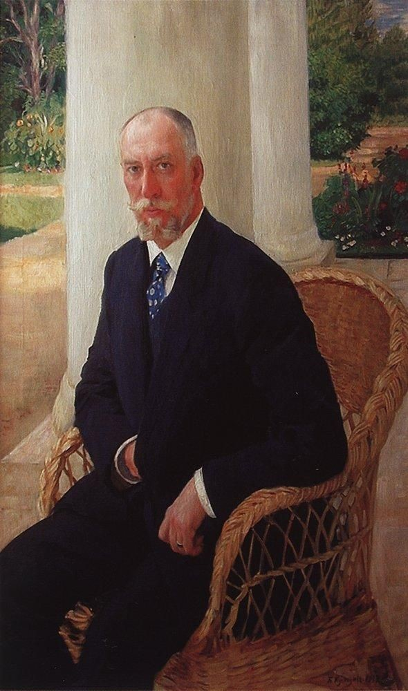

Московско-Рязанская железная дорога
В 1858 году "с высочайшего повеления Его Императорского Величества соизволения" было разрешено производить изыскания к устройству железной дороги от Москвы до Саратова. Проектов было два. Выбор пал на левый берег Москвы-реки, более ровный, со сравнительно небольшими речками. Для развития Малаховки весьма важное значение имело открытие Рязанской железной дороги. После открытия движения стало развиваться дачное строительство. В 1880 году открылась пассажирская остановка дачных поездов на 27-й версте, которую назвали Малаховкой по имени ближайшего населённого пункта, Соколово-Малахово, от которого дорога прошла в одной версте.

Платоформа Малаховка
Многие ключевые для Малаховки события или начинались с инициативы железнодорожных служащих или не обходились без их участия.
Железнодорожники-жители Малаховки:
- Горлицкий Валерий (Воспитанник детдома № 12 МДГ. Окончил Институт железнодорожного транспорта. Инженер. Был начальником Киевской железной дороги.)
- Гомзелев (железнодорожный рабочий-революционер; его упоминает Протоклитов)
- Есаков Александр Семёнович
- Козлов Василий Кириллович
- Кошелёв Николай Иванович – начальник платформы «Малаховка» (занимал эту должность в 1918 году; его упоминает Протоклитов)
- Кравец (архитектор; его упоминает Куршевиц)
- Поликарпов (инженер; его упоминает Куршевиц)
- Соколовы Пётр Иванович и Наталия Ивановна
- Чебышевы

Карл Федорович фон Мекк
Надежда Филаретовна фон Мекк
Фон Мекк вступил в Общество Саратовской железной дороги, ставившее своей целью сооружение на частные деньги железной дороги между Москвой и Саратовом; на первом этапе строиться должен был участок Москва — Коломна. Строительство было начато в 1860 году. Этот участок протяженностью 117,2 версты был завершен всего за два года и введён в эксплуатацию, в чём основная заслуга, по мнению современников, принадлежала главному секретарю общества Павлу фон Дервизу и его ближайшему помощнику Фон Мекку. В 1863 году вместо него было учреждено Общество Московско-Рязанской железной дороги, которое фон Дервиз возглавил уже в качестве председателя правления — и привлёк фон Мекка к строительству дороги от Коломны до Рязани в качестве главного подрядчика.

Первый пассажирский поезд по маршруту Москва — Коломна прошёл 20 июля 1862 года. Протяжённость дороги составила 106 вёрст (117 км). Ежедневно от Москвы до Коломны ходили две пары поездов, путь занимал около 3,5—4 часов.
Сквер. Малаховка. 1913 год
Город-сад. Проект фон Мекка по созданию города для железнодорожных служащих.
Поселок Кратово в Раменском районе своим возникновением обязан Московско-Казанской железной дороге, строительство которой началось 11 июня 1860 года. Укладку полотна на первом участке от Москвы до Коломны поручили российскому предпринимателю с немецкими корнями Карлу Федоровичу фон Мекку. Всего за два года была построена линия протяженностью 117,2 верст, то есть 125 километров. В начале 1863 года фон Мекк получил заказ на строительство нового участка путей от Коломны до Рязани.
Храм Державной Божией Матери г.Жуковский. Город-сад
Крупный объект города-сада – больничный городок. Это единственная часть проекта, которую удалось отстроить полностью. Комплекс был задуман архитектором Александром Таманяном. Здания стоят на площади Громова на территории города Жуковского, недалеко от Кратова. Сейчас в одном из них располагается народный театр «Стрела», в другом – Жуковский авиационный техникум.
Санаторий для служащих железной дороги. Театр «СТРЕЛА».
Роль служащих Московско-Рязанской (Казанской) железной дороги в истории Малаховки
Железнодорожные служащие, будучи первыми постоянными жителями Малаховки, играли важную роль в жизни посёлка и приняли участие в основных событиях его дореволюционной истории
Театр. Первое упоминание о какой-либо театральной жизни в Малаховке – журнал «Театрал» за 1896 год: «Управление Московско-Казанской железной дороги, желая доставить рабочим дороги развлечения, предполагает устроить для них в течение рождественских праздников несколько бесплатных спектаклей.
Конка. На заседании Правления Общества Московско-Казанской железной дороги в 1899 году было рассмотрено «Дело о сооружении подъездного конно-железнодорожного пути общего пользования к платформе Малаховка».
Гимназия. До 1908 года в Малаховке существовала лишь церковно-приходская школа при Петропавловском храме. Было решено построить школу. Правление Казанской железной дороги являлось шефом гимназии, помогало ей регулярно. Рабочие и служащие дороги перевезли и доставили строительные материалы от изготовителей до места застройки. Их участие представляло подлинный факт личного труда, ибо машинисты должны были совершать лишние рейсы, а диспетчеры должны были ввести их в расписание движения поездов.
Правление дороги ежегодно отпускало Комитету Общества пособия не менее 600 руб., ежедневно отвозило на занятия и с занятий учащихся, живших вдоль линии железной дороги.
Строительство железной дороги благотворно повлияло на развитие поселка Малаховка и уровень жизни неселения.
«Модный» импровизированный курорт» напоминал этот дачный поселок, большинство жителей которого в 19 веке были железнодорожные служащие. Интеллигенция приезжала в это прекрасное место по железной дороге, и создавался особенный микроклимат для встреч людей образованных, театральных постановок, «Телешовских встреч» литераторов и просто добрососедских отношений.
Правление железной дороги и служащие участвуют в строительстве гимназии, устройстве Летнего театра, конки. Создаются красивые деревянные и каменные усадьбы. Малаховка становится престижным и уютным местом для отдыха и жизни.
Строительство железной дороги во многом способствовала этому.